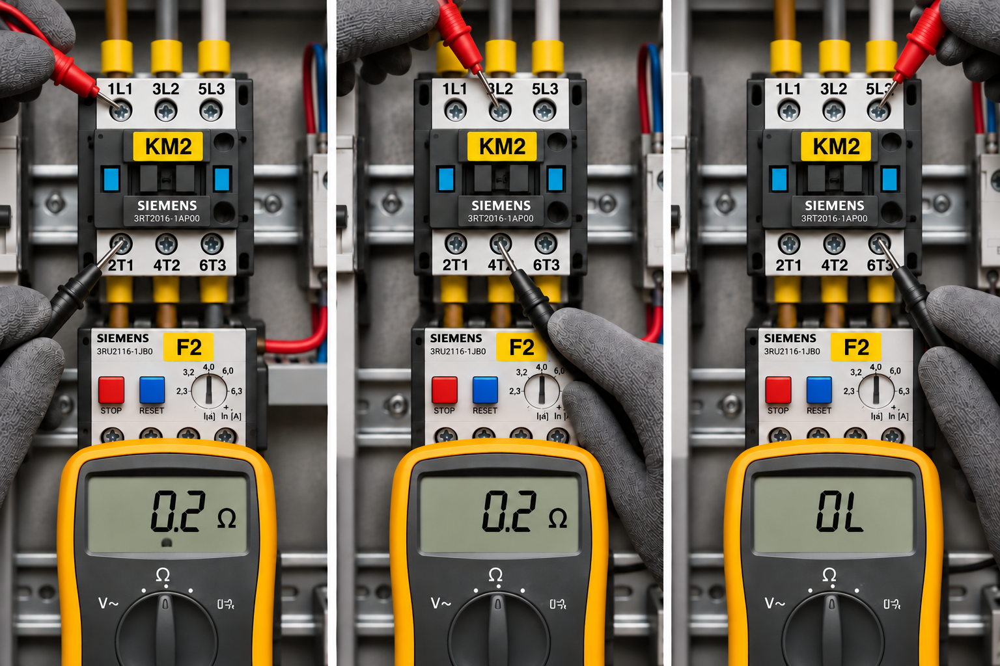

Simulación: estrella equilibrada, punto común flotante, rotor parado, sin FEM de giro y medida de alta impedancia. Los valores no describen cualquier motor ni confirman solos la causa.
Cierre mecánico de ensayo sin carga y con potencia y mando consignados; lectura del acta simulada, no una maniobra del alumno. No se adopta 0,2 Ω como criterio universal.
